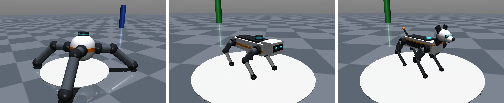
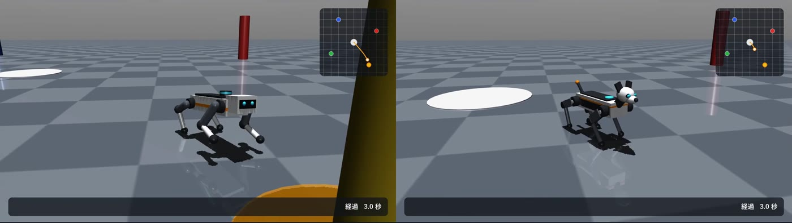
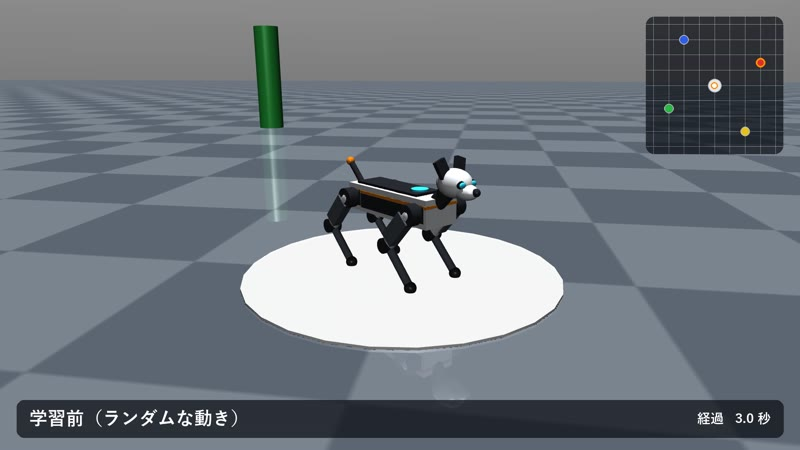
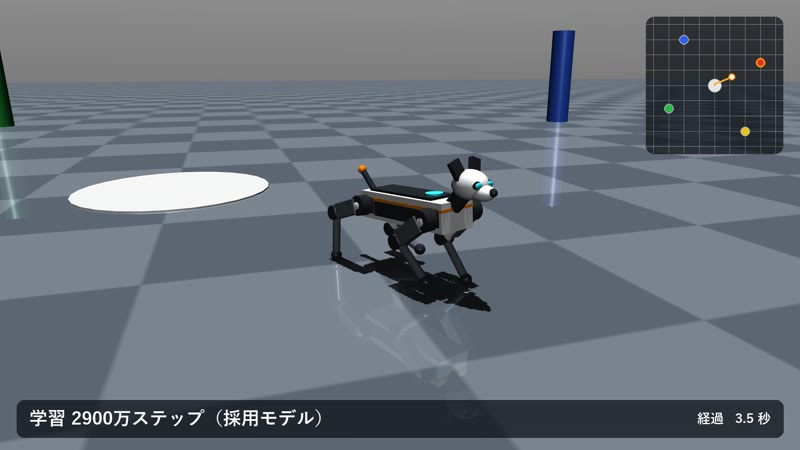
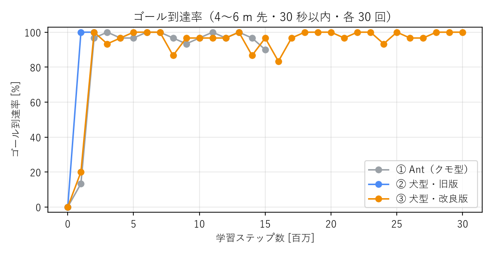

日本語で「赤い柱に寄ってから青い柱へ行き、最後はホームに戻って」と指示すると、犬型の4脚ロボットが指示どおりの順に各地点を歩いて回るシステムを、物理シミュレータ MuJoCo 上に実装した。指示の解釈はローカルで動く LLM（gemma4 / Ollama）が担当し、歩行そのものは強化学習（PPO）で獲得した「指定したゴールまで歩く」方策が担当する。ロボットは MuJoCo のモデル記述（MJCF）で自作した。初版で使った標準モデル Ant（クモ型）から犬型に作り直し、さらに歩き方が虫のように見えたため、報酬を設計し直して犬らしいトロット歩行にした。
(1) 犬型ロボット（自作） 実在の四足ロボット（Spot、ANYmal、Unitree Go2 など）と同じく、胴体の下に脚が伸び膝が後ろに曲がる構成にした。

| 体 | 胴体（箱形、6 kg）と頭、脚 4 本（太もも・すね各 0.21 m）。各脚は外転・股・膝の 3 関節で計 12 関節、全体で 12.5 kg、立った胴体の高さ約 0.33 m。耳・鼻・しっぽ・外装は見た目だけの部品（質量 0・接触なし）で、物理には影響しない |
|---|---|
| 制御 | 関節は位置制御（PD、比例ゲイン 60、最大トルク 30 N·m）。方策の出力は「立ち姿勢からの関節角のずれ」（±0.4 rad）で、50 Hz で更新 |
| 観測（53次元） | 胴体の高さ・重力の向き・速度・角速度（胴体座標系）、12 関節の角度と速度、直前の行動、ゴールの方向（胴体座標系 2 / 世界座標系 2）と距離（5 m で頭打ち）、歩行クロックの位相（sin・cos） |
| 報酬 | 四足ロボットの強化学習で標準的な項目で構成した。 加点：ゴールへ近づく速さが目標 0.8 m/秒に近いこと（ガウス型）、頭がゴールの方を向いていること、足の接地が歩行クロック（周期 0.5 秒、対角の脚を交互に接地させるトロット）に合っていること、到着ボーナス 10（半径 0.6 m 以内） 減点：横方向の速度（カニ歩き）、胴体の傾き、胴体の高さの目標 0.33 m からのずれ、外転関節の開き、行動の急な変化、関節速度、トルク。 胴体が 0.2 m より下がるか大きく傾いたら転倒として終了 |
| ゴールの出し方 | 現在地から 1.5〜5 m・ランダムな方向に置き、到着するたびに次のゴールを出し直す（1 エピソード 30 秒の中で何度も到達を練習）。出発時の向きもランダム |
| 学習 | PPO（Stable-Baselines3）、16 並列環境、方策・価値とも 256×256 の MLP、観測・報酬の正規化あり、CPU のみ。3,000 万ステップ（約 2.3 時間） |
(2) LLM プランナー 地点名と座標の一覧をシステムプロンプトで与え、指示を {"route": [...], "reply": "..."} の JSON に変換させる。Ollama の構造化出力（JSON Schema）で route の要素を地点名の列挙型に制限し、存在しない地点を出力できないようにした。LLM が使えない場合は、文中の色名を拾う簡易的な変換に切り替わる。
(3) 実行 経由地を 1 つずつゴールとして方策に渡し、到着したら次の経由地へ切り替える。
| 歩き方の指標（30 秒 × 10 回の平均） | ② 旧版 | ③ 改良版 |
|---|---|---|
| 移動の速さ | 1.76 m/秒 | 0.75 m/秒 |
| 足が地面に着いている時間の割合 | 31% | 48% |
| 対角の脚（左前と右後ろ・右前と左後ろ）の接地がそろっている割合 | 34% | 73% |
| 脚の横への開き（外転関節の角度の絶対値） | 0.14 rad | 0.08 rad |
| 横方向の速さ（カニ歩き） | 0.24 m/秒 | 0.07 m/秒 |




モデルの選び方：改良版は学習中のチェックポイントごとに到達率がばらつき、失敗はすべて転倒だった。そこで 30 回の試験で 100% だったものを 100 回で測り直し（1,300 万・2,000 万・2,800 万・2,900 万・3,000 万ステップが 100%）、さらに下の 3 経路を 20 回ずつ走らせた。全経路で 100% だったのは 2,000 万と 2,900 万ステップの 2 つで、歩き方の指標もほぼ同じだったため、経路の所要時間がわずかに短い 2,900 万ステップを採用した。最終の 3,000 万ステップは一周経路で 1 回転倒した（95%）。
| ゴール到達（4〜6 m 先・30 秒以内、各 100 回） | 到達率 | 平均到達時間 | 転倒率 |
|---|---|---|---|
| ① 初版：Ant（700 万ステップ） | 99% | 2.87 秒 | 0% |
| ② 犬型・旧版（200 万ステップ） | 98% | 2.76 秒 | 1% |
| ③ 犬型・改良版（2,900 万ステップ・採用） | 100% | 6.08 秒 | 0% |
日本語指示での実行（LLM の変換結果と、同じ経由地リストを初期姿勢の乱数を変えて 20 回ずつ実行した成功率・平均所要時間）
| 指示 | LLM の出力（route） | ③ 改良版 | ② 旧版 | ① Ant |
|---|---|---|---|---|
| 赤い柱に寄ってから青い柱へ行き、最後はホームに戻って | 赤 → 青 → ホーム | 100%・28.2 秒 | 95%・11.7 秒 | 80%・13.6 秒 |
| 黄色い柱に荷物を届けたら帰ってきて | 黄 → ホーム | 100%・16.9 秒 | 100%・7.4 秒 | 95%・9.3 秒 |
| 全部の柱を一周してから戻ってきて | 赤 → 青 → 緑 → 黄 → ホーム | 100%・51.9 秒 | 100%・20.5 秒 | 85%・25.2 秒 |
| 緑の柱の様子を見てきて。そのあと赤い柱にも寄ってね | 緑 → 赤 | （LLM 変換のみ確認） | ||
LLM は「帰って」をホームと解釈し、「全部の柱を一周」を順番付きの経由地リストに展開できた。改良版は 3 経路・計 60 回すべて成功した。所要時間は旧版の約 2.5 倍だが、これは目標速度を 0.8 m/秒に抑えた設計どおりの結果で、速さと引き換えに犬らしい歩き方と安定性を得た。動画のデモは乱数シード 1 の試行で、3 本目（一周）のみ 2 倍速で収録している。
コード一式は GitHub リポジトリ https://github.com/azs4n10/pai-final-quadruped に置いた（README 参照）。主なファイル：goal_dog.py（犬型ロボット・改良版と環境）、goal_dog_v1.py（犬型・旧版）、goal_ant.py（初版の環境）、train_goal.py（学習）、planner.py（LLM）、demo.py（指示の実行と録画）、evaluate.py（評価）、make_video.py（動画の作成）。
例：python demo.py --robot dog --text "黄色い柱に荷物を届けたら帰ってきて"
使用ツール：MuJoCo 3.12 / Gymnasium 1.3 / Stable-Baselines3 2.9（PPO）/ Ollama（gemma4:e4b）/ Python 3.12。動画のデモは等速で、3 本目（一周）のみ 2 倍速（画面に表示）。